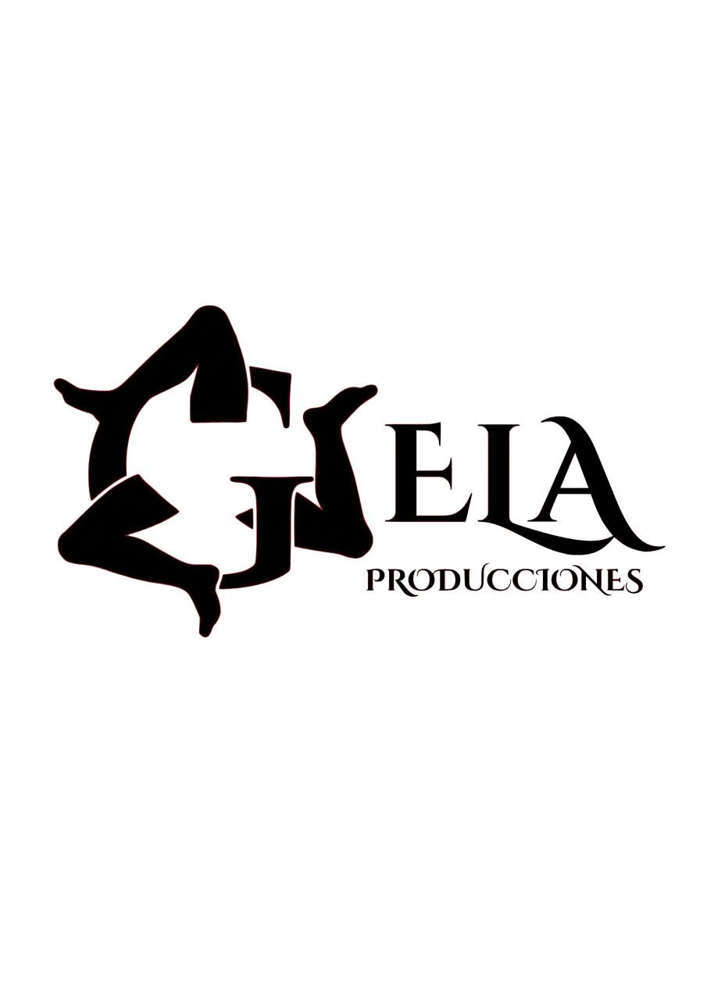

Gela Producciones
Gela Producciones es una iniciativa dedicada a la creación de cortometrajes y largometrajes cinematográficos. Impulsada por tres compañeros graduados en Historia con una profunda pasión por el arte audiovisual, este proyecto busca aunar todos los esfuerzos para crear contenido original con un fuerte impacto futuro en el mundo del cine.

Descargar Dossier Productora